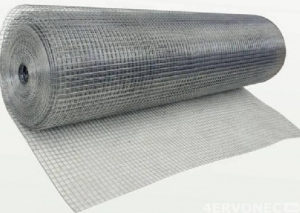

Инструменты и приспособления для штукатурных работ
| Инструмент | Назначение |
|---|---|
Скребок сделан из металлического полотна и выглядит, как трапециевидная лопатка. Используется он для очистки неровностей с поверхности. |
|
Штукатурный молоток инструмент с кайлом, помогающий подготовить стены к штукатурным работам. С его помощью легко отбить выступающие части стен, сделать насечки. |
|
Бучарда специальный молоток весом 1-1,5 кг, применяемый для насечки поверхностей подлежащих оштукатуриванию. |
|
Зубило, зубчатка применяется для насечки поверхностей. |
|
Металлическая щетка предназначена для очистки поверхностей. |
|
Макловица широкая кисть для очистки и смачивания поверхности перед оштукатуриванием. |
|
Кельма кельмасделана из плотного железного полотна, к которому крепится ручка. Кельму также используют для набрасывания уже готового раствора на оштукатуриваемую поверхность и для разглаживания набросанного материала. |
|
Сокол соколвыглядит как щиток с размером площадки примерно 40x42 см. Для удобства в середине приделана деревянная или металлическая ручка. На «сокол» кельмой выкладывается небольшая порция смеси и наносится на стену. Сам «сокол» к тому же служит еще и для выравнивания раствора. |
|
Ковш ковшобъемом до 1 л применяется для набрасывания раствора разной консистенции на рабочую поверхность. Им можно отмеривать необходимый объем штукатурных смесей для приготовления раствора. |
|
Полутерок применяют для намазывания, разравнивания и разглаживания раствора на поверхности. |
|
Гладилка стальная этим инструментом выполняют «железнение» для уплотнения поверхностного слоя штукатурного раствора. Представляет собой полированную пластину из металла с ручкой. |
|
Угловой мастерок необходим для выравнивания углов. Он имеет форму угла (книжки). |
|
Терки предназначены для затирки штукатурки. Терки различаются материалом исполнения (полиуретановые, пластиковые, резиновые, латексные и пр.). |
|
Угольник необходим для работ с углами, он помогает выполнить точный прямой угол между плоскостями стен. Также угольник требуется для монтажа откосных и угловых маячков. |
|
Правило представляет собой длинную и ровную рейку из древесины или алюминия, правило считается важнейшим инструментом для штукатурных работ. С его помощью выполняется вытягивание нанесенного на стену раствора по маячкам. Нередко правило используется также для работы с внутренними углами.Длина инструмента варьируется от полуметра до трех. Для работы со всей плоскостью стены обычно выбирается правило порядка двух метров в длину. Правила бывают различной формы (сечения). Самый востребованный вид правила - в форме трапеции. Такое правило имеет выемку под пальцы (для надежного захвата), а также две рабочие поверхности – прямую и косую, что удобно для удаления излишков раствора, особенно в углах. |
|
Строительные уровни позволяют определить ровность поверхности. |
|
Лазерный уровень этот девайс изобрели для более «продвинутых» штукатуров, которые ценят свое время. В эксплуатации прост, значительно ускоряет и улучшает процесс разметки и установки маяков. |
|
Отвес им провешивают стены и узнают, насколько ровно оштукатурена поверхность. С помощью отвеса натягивают нити по горизонтали, вертикали и диагонали. Это позволяет определить точное расположение маяков в одной плоскости. |
|
Капроновая нить при оштукатуривании используется для ориентиров. |
|
 |
Строительный миксер требуется для замешивания раствора. Часто его заменяют дрелью с насадкой миксер. |
Сита используют для просеивания растворов. |
|
Ведро должно быть объемом 10-20 литров. |
|
|  | Сетка под штукатурку позволяет укрепить стены от повреждений, повысить адгезию слоя штукатурки с поверхностью. |
Штукатурные уголки применяют для формирования внешних углов. |
|
Штукатурный столик служит для работы на верхней части стены или на поверхности потолка. |